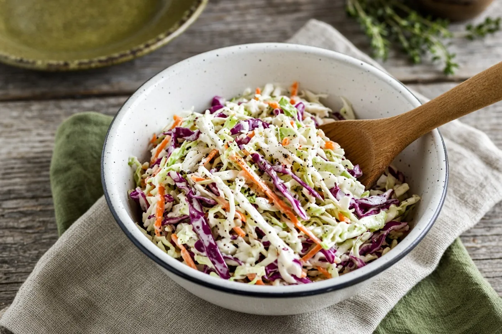

Classic Creamy Southern Coleslaw
A quick, creamy, slightly sweet slaw from a bag of coleslaw mix, mayo, sour cream, cider vinegar, and lemon.

6 servings
By
Yield: 6 servings
Prep:
Total:
Difficulty: Easy
Ingredients
- 1 (14-oz) bag coleslaw mix
- 1/4 cup mayonnaise
- 1/4 cup sour cream
- 1 Tbsp apple cider vinegar
- 2 tsp sugar
- 1 tsp lemon juice
- Salt and black pepper, to taste
Instructions
- Whisk the mayonnaise, sour cream, apple cider vinegar, sugar, lemon juice, salt, and black pepper together in a large bowl.
- Add the coleslaw mix and toss until evenly coated.
- Chill 30 minutes so the cabbage softens a little, then toss again and serve.
Notes: It's good right away too, but the short chill lets the flavors come together. Pile it on pulled pork or barbecue sandwiches.